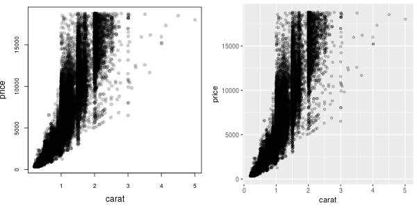
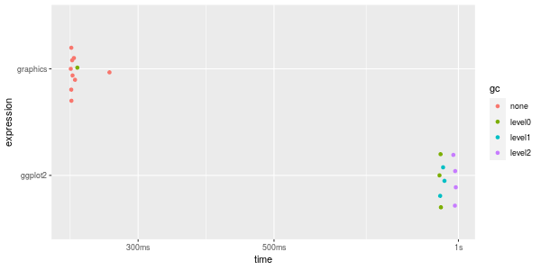
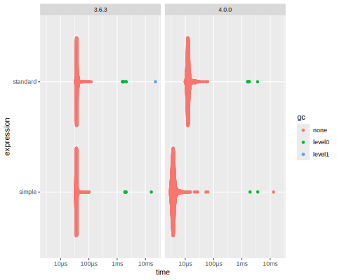
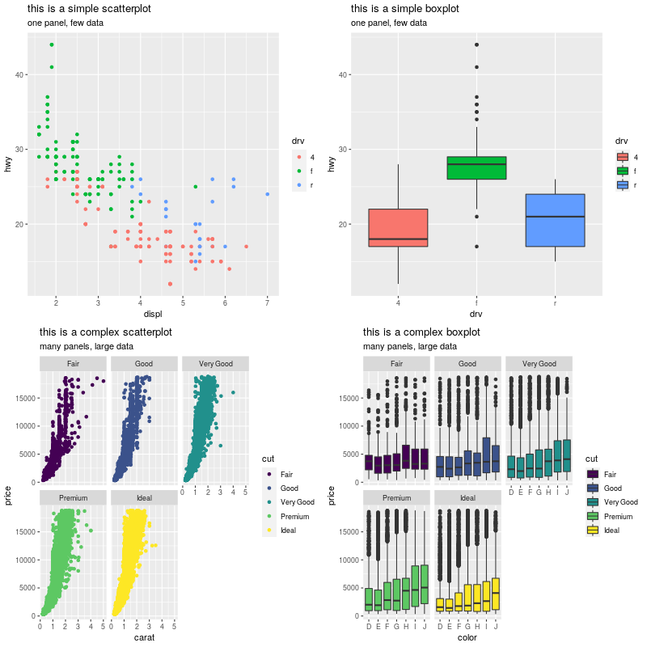
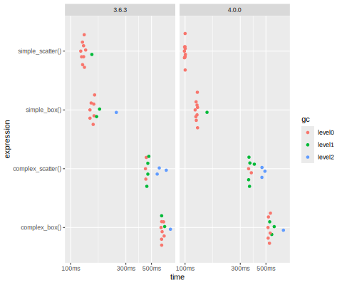

## library(grid)
##
## simpleUnit <- function() {
## unit(1:100, c('mm'))
## }
## stdUnit <- function() {
## unit(1:100, c('mm', 'inches'))
## }One of the main downsides to the ‘grid’ graphics package is that it is slow. And that makes some important packages that depend on ‘grid’, like ‘ggplot2’, slow. For example, the scatterplots shown below are roughly equivalent, but one is drawn using ‘graphics’ and the other using ‘ggplot2’.

The ‘ggplot2’ version takes more than 4 times as long to draw.
(The benchmarks in this post were produced using the ‘bench’ package within a Docker container based on rocker/r-devel, but with R-devel (r77995) built with --enable-memory-profiling and a bunch of R packages installed; the Docker images, pmur002/grid-new-units-r-3.6.3 and pmur002/grid-new-units-r-devel, are available from DockerHub.)

Thomas Lin Pedersen identified that, in typical ‘ggplot2’ usage, a significant amount of time was being spent creating and manipulating ‘grid’ “unit” objects and this has lead to a change in the internal implementation of “units” in the ‘grid’ graphics package for R version 4.0.0.
On one hand, this is not news, because the public behaviour of ‘grid’ units has not changed at all. However, there are two important consequences of this change: one for users and one for developers.
For users, the reason for making the change was speed; with the new ‘grid’ units, certain operations go a lot faster (an order of magnitude or more in many cases). For example, the following code that just creates unit objects is up to ten times faster with the new unit implementation.

Although manipulating units is only a fraction of what packages like ‘ggplot2’ do, the impact of the unit speed up is sufficient to be noticeable in the production of ‘ggplot2’ plots. The plots below include examples of both simple and complex ‘ggplot2’ plots.

The following timings show that the new unit implementation in ‘grid’ can translate to a 10%-20% speed-up in ‘ggplot2’ plots.

For developers, the impact of the changes to ‘grid’ units should be neutral, but they can be disastrous if a package has been peeking and poking at the internal implementation of ‘grid’ units.
We believe that we have identified most of these cases and that most of those have now been fixed. In case some problems have not yet come to light, the following known problems and solutions may be helpful:
it is possible for a package to contain a saved R object that contains old-style ‘grid’ units. There are protections in the new ‘grid’ implementation to upgrade such objects to new-style units or, at worst, generate an error. Recreating the saved R object should hopefully resolve any issues.
several packages were extracting attributes from “unit” objects, e.g., the
"mm"fromunit(1, "mm"); there is a newgrid::unitType()function that may help packages to avoid accessing ‘grid’ unit internals in the future.
There was also a small lie earlier: the public behaviour of ‘grid’ units has actually changed a little because the printing of some units is now different. For example, the following code and output shows that arithmetic on units produces a different printed result.
## Loading required package: grDevices
## > getRversion()
## [1] ‘3.6.3’
## > library(grid)
## > unit(1, "npc") - unit(1, "cm")
## [1] 1npc-1cm
## >## Loading required package: grDevices
## > getRversion()
## [1] ‘4.0.0’
## > library(grid)
## > unit(1, "npc") - unit(1, "cm")
## [1] sum(1npc, -1cm)
## >The original design and implementation of new units was contributed by Thomas Lin Pedersen. Paul Murrell contributed minor fixes and features and lead the testing, diagnosis, and remedying of problems in packages. Paul Murrell’s contribution was partially supported by a donation from R Studio to The University of Auckland Foundation. Both authors would like to acknowledge the patience and support of the CRAN team and the cooperation of the authors of the numerous package that were affected by these changes.